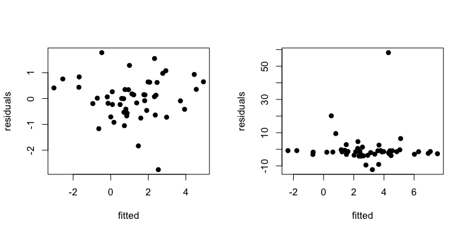
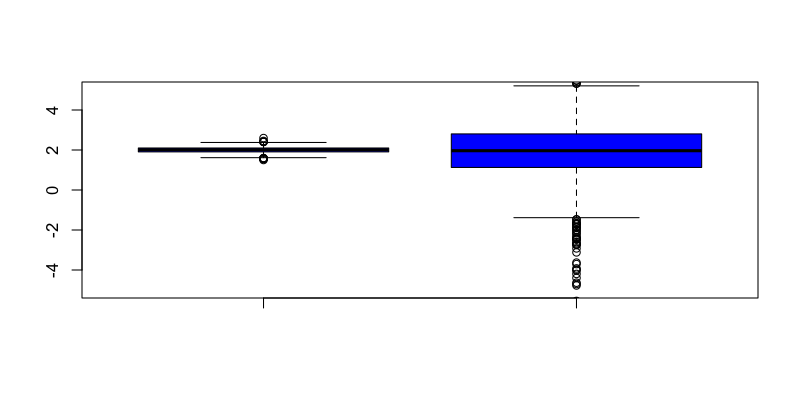
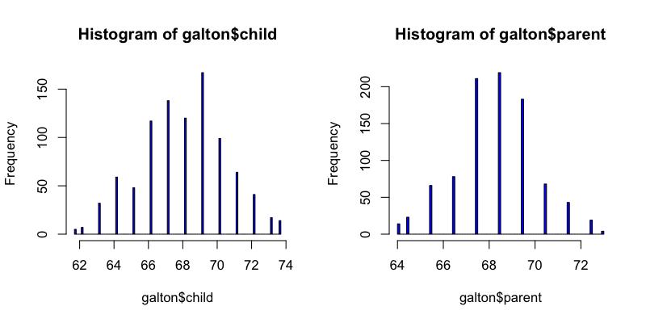
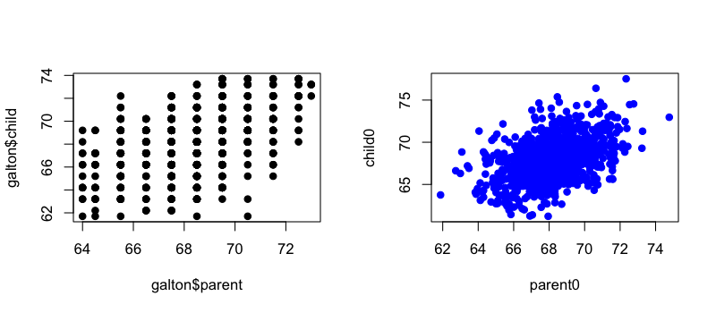
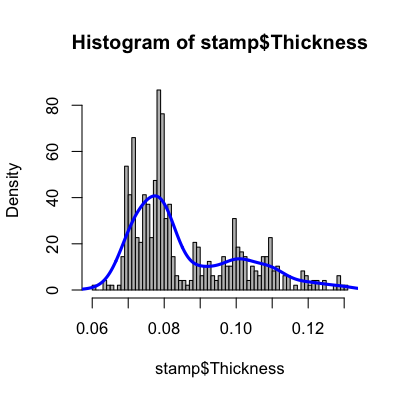
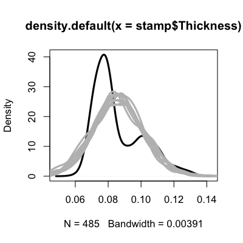
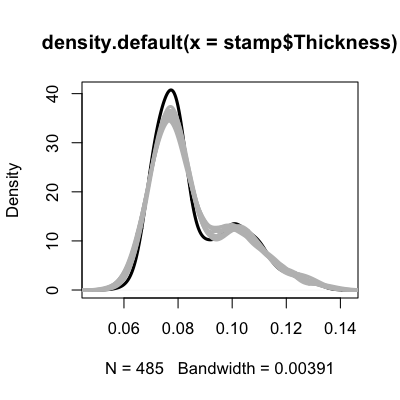
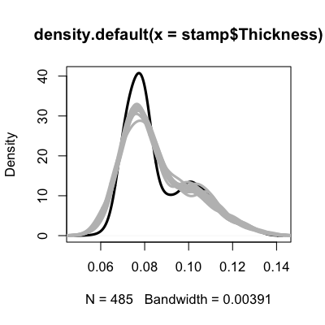

- Way back in the first week we talked about simulating data from distributions in R using the rfoo functions.
- In general simulations are way more flexible/useful
- For bootstrapping as we saw in week 7
- For evaluating models
- For testing different hypotheses
- For sensitivity analysis
- At minimum it is useful to simulate
- A best case scenario
- A few examples where you know your approach won't work
- The importance of simulating the extremes
Simulation for model checking
Jeffrey Leek, Assistant Professor of Biostatistics
Johns Hopkins Bloomberg School of Public Health
Basic ideas
Simulating data from a model
Suppose that you have a regression model
\[ Y_i = b_0 + b_1 X_i + e_i\]
Here is an example of generating data from this model where \(X_i\) and \(e_i\) are normal:
set.seed(44333)
x <- rnorm(50)
e <- rnorm(50)
b0 <- 1; b1 <- 2
y <- b0 + b1*x + e
Violating assumptions
set.seed(44333)
x <- rnorm(50)
e <- rnorm(50); e2 <- rcauchy(50)
b0 <- 1; b1 <- 2
y <- b0 + b1*x + e; y2 <- b0 + b1*x + e2
Violating assumptions
par(mfrow=c(1,2))
plot(lm(y ~ x)$fitted,lm(y~x)$residuals,pch=19,xlab="fitted",ylab="residuals")
plot(lm(y2 ~ x)$fitted,lm(y2~x)$residuals,pch=19,xlab="fitted",ylab="residuals")

Repeated simulations
set.seed(44333)
betaNorm <- betaCauch <- rep(NA,1000)
for(i in 1:1000){
x <- rnorm(50); e <- rnorm(50); e2 <- rcauchy(50); b0 <- 1; b1 <- 2
y <- b0 + b1*x + e; y2 <- b0 + b1*x + e2
betaNorm[i] <- lm(y ~ x)$coeff[2]; betaCauch[i] <- lm(y2 ~ x)$coeff[2]
}
quantile(betaNorm)
0% 25% 50% 75% 100%
1.500 1.906 2.013 2.100 2.596
quantile(betaCauch)
0% 25% 50% 75% 100%
-278.352 1.130 1.965 2.804 272.391
Monte Carlo Error
boxplot(betaNorm,betaCauch,col="blue",ylim=c(-5,5))

Simulation based on a data set
library(UsingR); data(galton); nobs <- dim(galton)[1]
par(mfrow=c(1,2))
hist(galton$child,col="blue",breaks=100)
hist(galton$parent,col="blue",breaks=100)

Calculating means,variances
lm1 <- lm(galton$child ~ galton$parent)
parent0 <- rnorm(nobs,sd=sd(galton$parent),mean=mean(galton$parent))
child0 <- lm1$coeff[1] + lm1$coeff[2]*parent0 + rnorm(nobs,sd=summary(lm1)$sigma)
par(mfrow=c(1,2))
plot(galton$parent,galton$child,pch=19)
plot(parent0,child0,pch=19,col="blue")

Simulating more complicated scenarios
library(bootstrap); data(stamp); nobs <- dim(stamp)[1]
hist(stamp$Thickness,col="grey",breaks=100,freq=F)
dens <- density(stamp$Thickness)
lines(dens,col="blue",lwd=3)

A simulation that is too simple
plot(density(stamp$Thickness),col="black",lwd=3)
for(i in 1:10){
newThick <- rnorm(nobs,mean=mean(stamp$Thickness),sd=sd(stamp$Thickness))
lines(density(newThick),col="grey",lwd=3)
}

How density estimation works

http://en.wikipedia.org/wiki/File:Comparison_of_1D_histogram_and_KDE.png
{kind=link}
Simulating from the density estimate
plot(density(stamp$Thickness),col="black",lwd=3)
for(i in 1:10){
newThick <- rnorm(nobs,mean=stamp$Thickness,sd=dens$bw)
lines(density(newThick),col="grey",lwd=3)
}

Increasing variability
plot(density(stamp$Thickness),col="black",lwd=3)
for(i in 1:10){
newThick <- rnorm(nobs,mean=stamp$Thickness,sd=dens$bw*1.5)
lines(density(newThick,bw=dens$bw),col="grey",lwd=3)
}

Notes and further resources
Notes
- Simulation can be applied to missing data problems - simulate what missing data might be
- Simulation values are often drawn from standard distributions, but this may not be appropriate
- Sensitivity analysis means trying different simulations with different assumptions and seeing how estimates change
Further resources